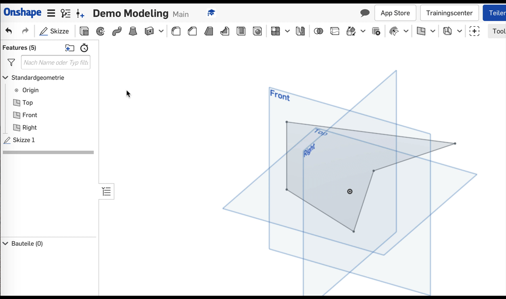
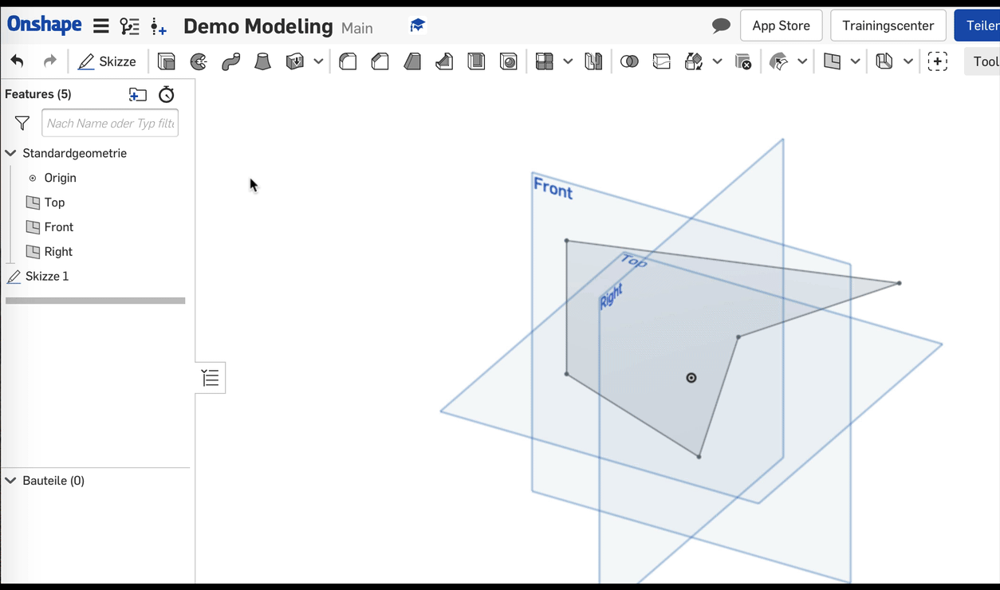
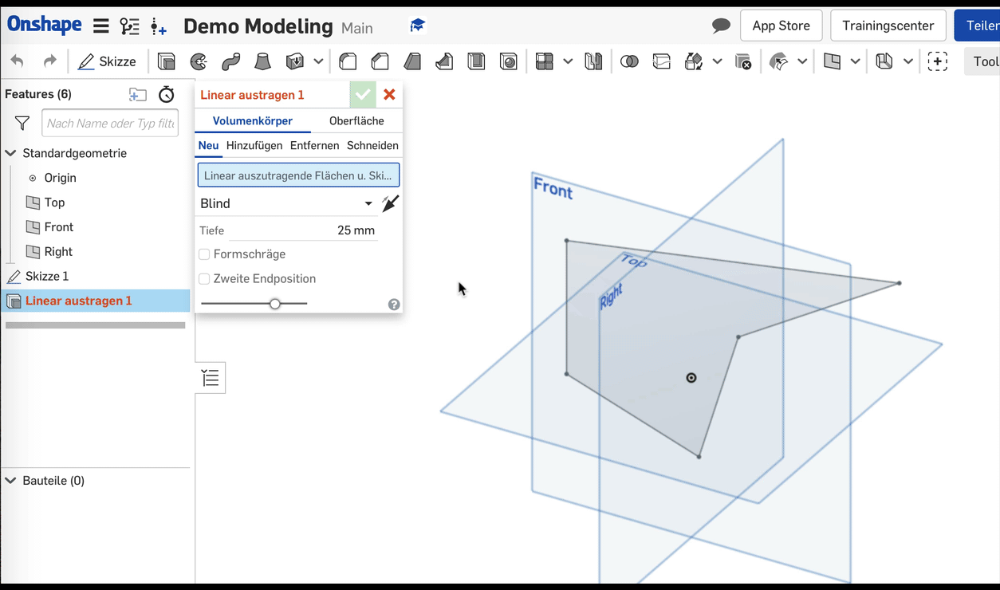
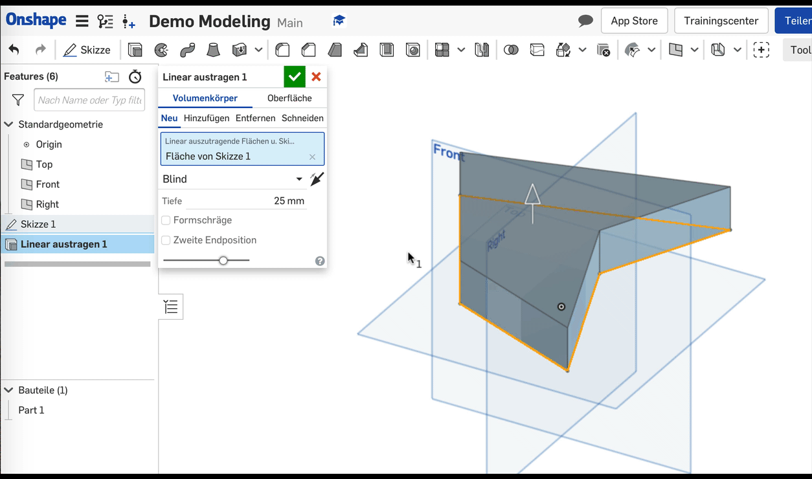
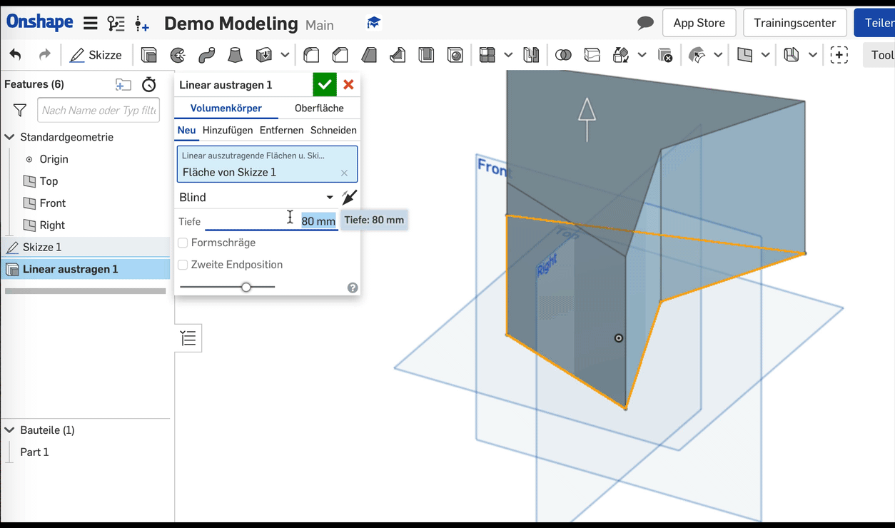
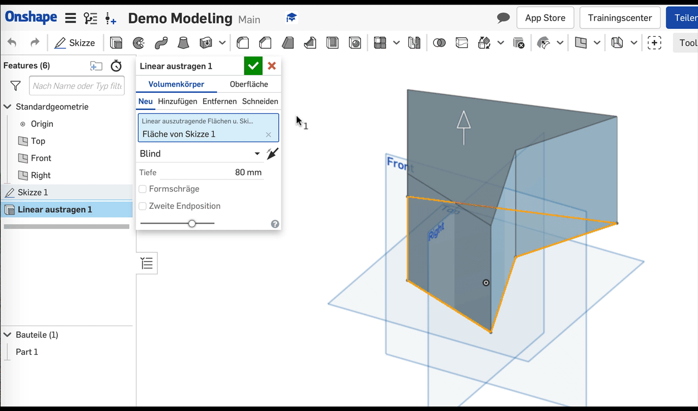

1. Schritt
Klicke in der Werkzeugleiste auf das Werkzeug "Linear austragen". Das Werkzeug wird dadurch aktiviert.
 

2. Schritt
Im neu geöffneten Dialogfeld ist die Schaltfläche "Linear auszutragende Flächen" blau hinterlegt und aktiviert.
Klicke jetzt nacheinander alle Flächen der Skizze an, die du austragen möchtest. Erneutes Klicken entfernt einzelne Flächen wieder.

3. Schritt
Im Eingabefeld "Tiefe" kannst du angeben, wie weit die Flächen in die dritte Dimension ausgetragen werden sollen. Tippe den gewünschten Wert (im mm) ein.

4. Schritt
Mit der Schaltfläche "Entgegengesetzte Richtung" kannst du bei Bedarf die Ausrichtung der Austragung umkehren.

Fertig!
Bestätige das Linear austragen mit einem Klick auf das grüne Häkchen.
